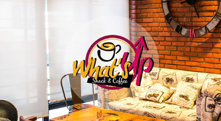

<!--
  Generated template for the NotificationsPage page.

  See http://ionicframework.com/docs/components/#navigation for more info on
  Ionic pages and navigation.
-->


<ion-content >
  <ion-grid no-padding>
      <ion-row class="photo-row">
          <ion-col>
              
          </ion-col>
        </ion-row>
        <ion-row class="position-info">
            <div class="notifications">
                <ion-row class="profil_img">
                    <div class="bee-image_bg">
                        <div class="bee-hexagon_bg">
                            <div class="bee-image">
                                <div class="bee-hexagon">
                                    
                                  </div>
                            </div>
                        </div>
                    </div>
                    <ion-icon class="setting" (click)="goToSetting()"
                     ios="ios-settings" md="md-settings"></ion-icon>
                </ion-row>
                <ion-row class="notification_title">
                  <div class="line left_line"></div>
                  <div class="titlesbox">Notification</div>
                  <div class="line right_line"></div>
                </ion-row>
                <ion-row class="notification_list">
                  <ion-list no-lines class="list-ios-notification">
                    <ng-container *ngFor="let notify of notifications;">
                        <container-element [ngSwitch]="notify.type">
                            <!-- friend's location -->
                            <ion-item class="item_height" text-wrap *ngSwitchCase="'shareLocation'">
                                <ion-avatar item-start>
                                    
                                    <div class="dot orange_dot"></div>
                                </ion-avatar>
                                <div class="theNotification">
                                    <span> Med limayma</span> a partager avec vous sa localisation, il est à 
                                    <span> The Big Dip</span>
                                </div>
                                <div class="time">
                                    il y'a 15min
                                </div>
                                <div class="line"></div>
                            </ion-item>
                            <!-- space's event -->
                            <ion-item class="item_height" text-wrap *ngSwitchCase="'newEvent'">
                                <ion-avatar item-start>
                                    
                                    <div class="dot green_dot"></div>
                                </ion-avatar>
                                <div class="theNotification">
                                    <span> What's up </span>vous envoyez a sa nouvelle evénement nommée 
                                    <span> Soirée YUMA.</span>
                                </div>
                                <div class="time">
                                    il y'a 35min
                                </div>
                                <div class="line"></div>
                            </ion-item>
                            <!-- friend's invitation -->
                            <ion-item class="item_height"  text-wrap *ngSwitchCase="'friendRequest'">
                                <ion-avatar item-start>
                                    
                                    <div class="dot red_dot"></div>
                                </ion-avatar>
                                <div class="theNotification">
                                    Lamiya Ben zekry à demandé de vous suivre.
                                </div>
                                <div class="time">
                                    il y'a 55min
                                </div>
                                <div class="div_btn">
                                    <div class="green_btn btn">
                                        <ion-icon class="ion-icon-btn"
                                        ios="ios-checkmark" md="ios-checkmark"></ion-icon>
                                    <span>Accepter</span> 
                                    </div>
                                    <div class="separate"></div>
                                    <div class="red_btn btn">
                                        <ion-icon class="ion-icon-btn"
                                        ios="ios-close" md="ios-close"></ion-icon>
                                    Annuler</div>
                                </div>
                                <div class="line"></div>
                            </ion-item>
                        </container-element>
                    </ng-container>
                  </ion-list>
                </ion-row>
            </div>
        </ion-row>
  </ion-grid>

</ion-content>
